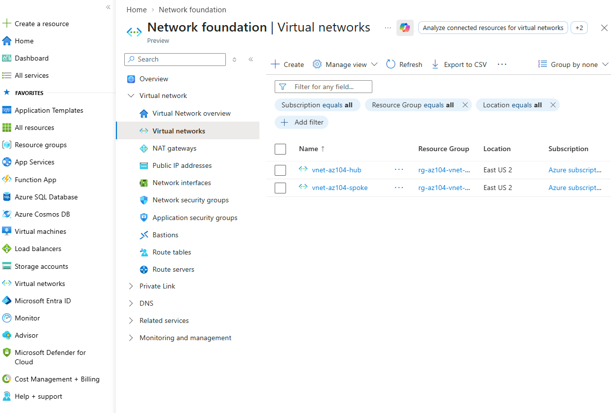
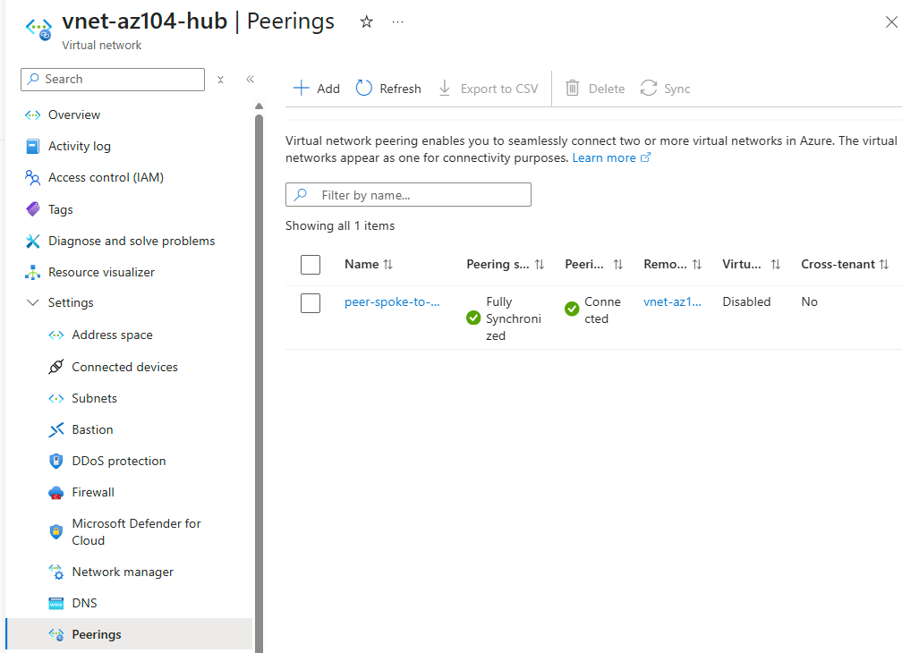
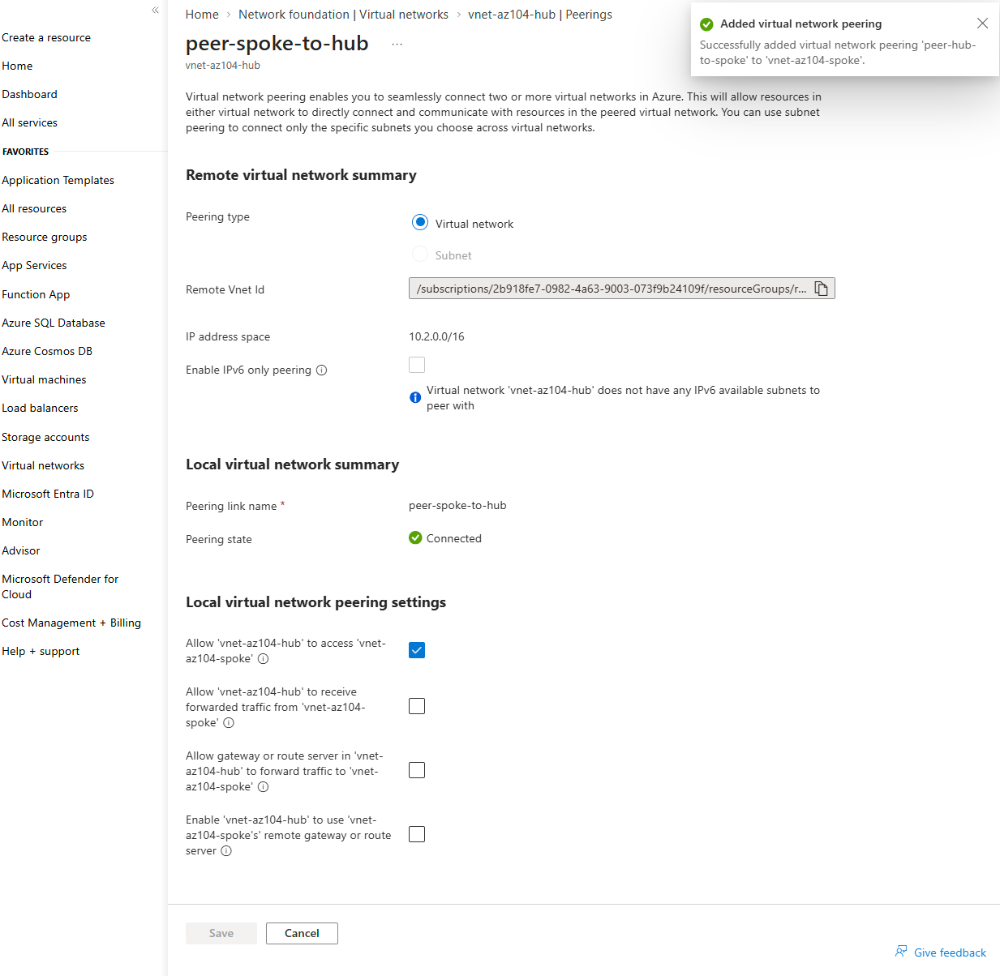
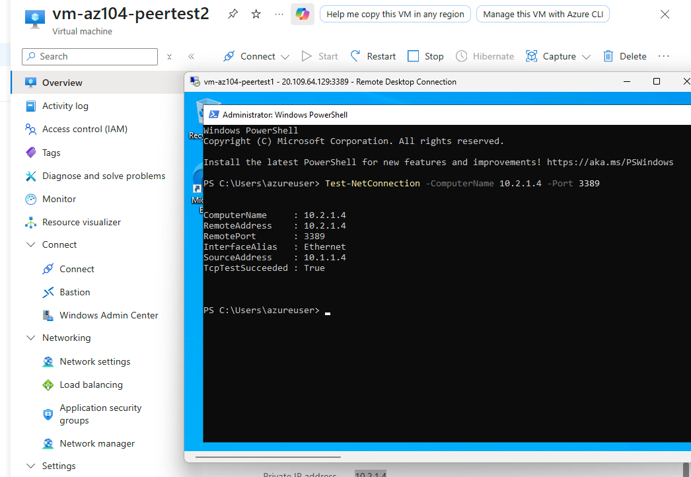

Built two Virtual Networks and peered them together, then deployed a VM in each to prove real traffic could actually flow across the peering connection, private IP to private IP, no public internet path involved. Along the way, discovered that Azure's own portal field labels for "local" and "remote" peering names don't map the way you'd assume, and that a first connectivity test failing doesn't automatically mean the network path is broken.
vnet-az104-demo from the NSG lab no longer existed, since that lab's whole resource group was deleted at the end of its session per cost discipline. Recreating it just to peer against it would have added a step that taught nothing new about peering itself. Two purpose-built VNets, hub and spoke, kept this lab focused on the actual new concept.
Azure will refuse to establish a peering connection at all if the two VNets' address ranges overlap. Choosing clearly distinct ranges up front avoided hitting that failure mode entirely, rather than discovering it mid-lab the way earlier labs discovered region or quota issues.
The first connectivity test used ICMP (ping) and returned 100% packet loss, which looked like a peering failure but wasn't. Windows Server blocks inbound ICMP by default regardless of network path. Switching to Test-NetConnection against port 3389, a port already known to be open since RDP itself uses it, gave an unambiguous, real application-layer proof of connectivity instead of a result confounded by an unrelated default firewall setting.
Built two VNets, peered them bidirectionally in a single portal action, deployed a VM in each, and proved real cross-VNet traffic with a genuine TCP test after an inconclusive ping attempt.




"If you can build it again tomorrow without looking at yesterday's code, you've learned it. If you need to copy and paste it again, you've only completed a tutorial."
I am learning Infrastructure as Code deliberately, specifically Terraform and Bicep, rather than treating them as copy-paste snippets. Peering resources in code require explicit resource blocks on both VNets, which makes the bidirectional requirement unmissable in a way the portal's single combined form does not.
Same both-sides pattern in Bicep: two separate virtualNetworkPeerings resources, one nested under each VNet, each explicitly referencing the other's resource ID.